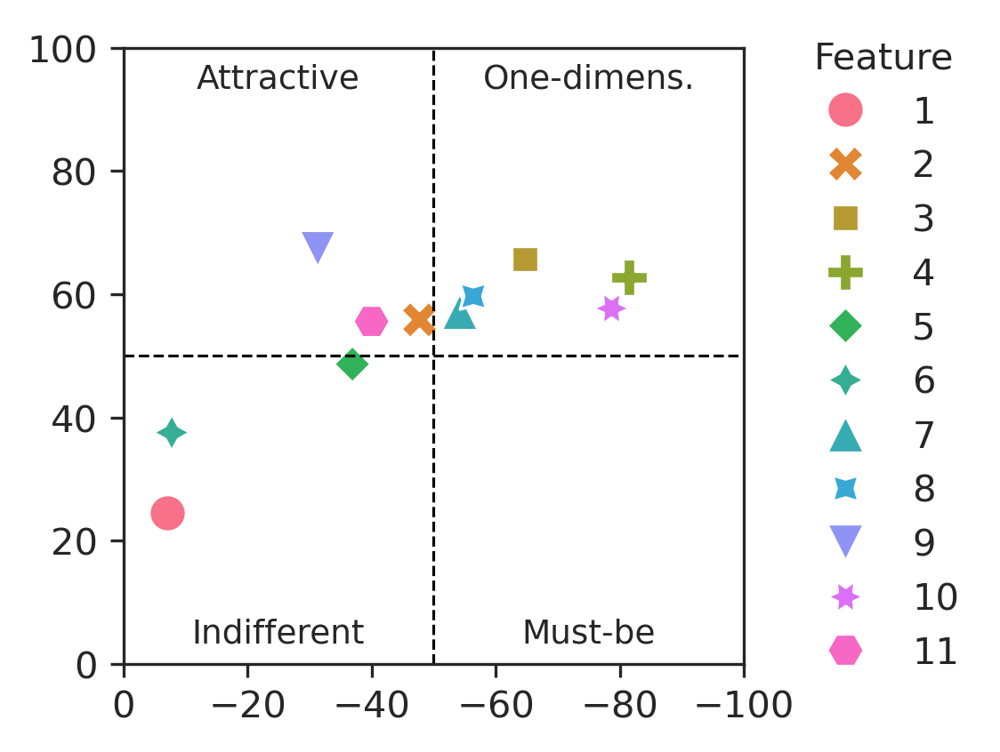
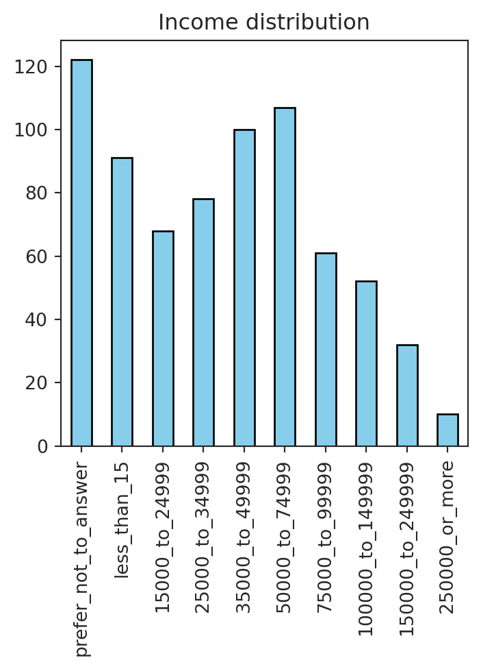
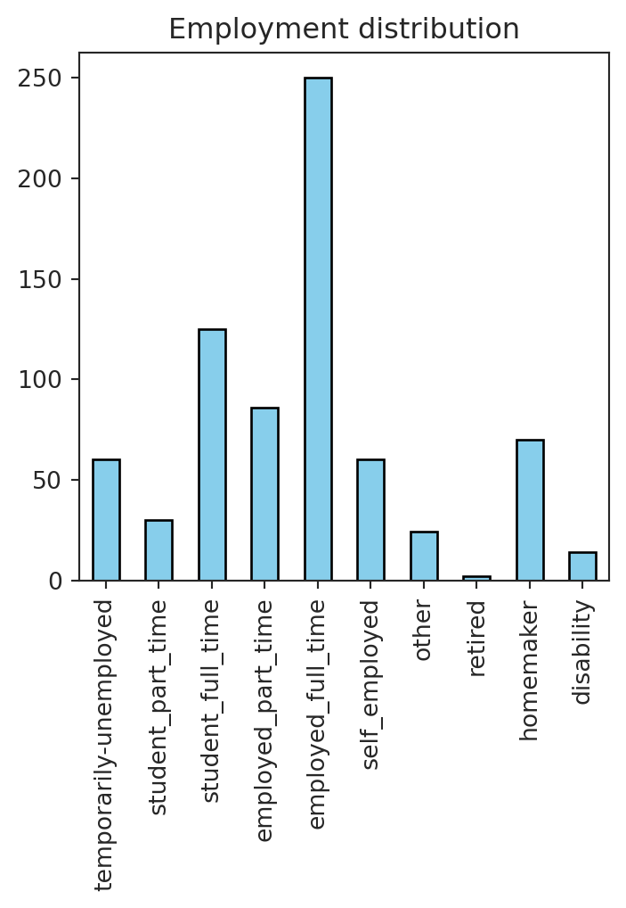

| Category | |||||
|---|---|---|---|---|---|
| Dysfunctional | 1) I like it | 2) I expect it | 3) I am neutral | 4) I can tolerate it | 5) I dislike it |
| Functional | |||||
| 1) I like it | Questionable | Attractive | Attractive | Attractive | One-dimensional |
| 2) I expect it | Reverse | Indifferent | Indifferent | Indifferent | Must-be |
| 3) I am neutral | Reverse | Indifferent | Indifferent | Indifferent | Must-be |
| 4) I can tolerate it | Reverse | Indifferent | Indifferent | Indifferent | Must-be |
| 5) I dislike it | Reverse | Reverse | Reverse | Reverse | Questionable |
The Kano model is a theory for product development and customer satisfaction developed in the 1980s by Professor Noriaki Kano. The model classifies customer preferences into five categories: Must-be Quality, One-dimensional Quality, Attractive Quality, Indifferent Quality, and Reverse Quality. The Kano model is used to prioritize features and functionalities in product development based on customer needs and expectations.
Categories of the Kano Model
Must-be features are basic requirements that customers expect. If these features are not present in a product, customers will be dissatisfied. However, the presence of these features does not necessarily lead to customer satisfaction. Must-be Quality features are considered essential for the product.
Examples: a car must have wheels, a smartphone must have a battery, a website must have a search function.
One-dimensional features are directly proportional to customer satisfaction. The more these features are present in a product, the more satisfied customers will be. These features are usually explicitly stated by customers and are easy to measure and quantify.
Examples: a car with leather seats, a smartphone with a high-resolution camera, a website with fast loading times.
Attractive features are unexpected features that delight customers. These features are not explicitly requested by customers but can create a positive emotional response when present. Attractive Quality features can differentiate a product from its competitors and create a competitive advantage.
Examples: a car with a built-in navigation system, a smartphone with facial recognition technology, a website with personalized recommendations.
Indifferent features are neither good nor bad from the customer’s perspective. Customers are indifferent to these features, and their presence or absence does not significantly impact customer satisfaction. These features are often considered “nice to have” but not essential.
Examples: a car with cup holders, a smartphone with a stylus, a website with social media integration.
Reverse features are features that, when present, can lead to customer dissatisfaction. These features may be perceived as unnecessary or even annoying by customers. It is essential to identify and eliminate Reverse Quality features to prevent negative customer experiences.
Examples: a car with uncomfortable seats, a smartphone with a short battery life, a website with intrusive pop-up ads.
Prioritizing Features with the Kano Model

With the Kano model, prioritization of features and functionalities becomes clear and straightforward as that:
a) keep eye on the Must-be Quality features, as they are essential, b) incorporate One-dimensional Quality features to increase customer satisfaction, c) consider Attractive Quality features to create a competitive advantage; d) eliminate Reverse Quality features, and e) save resources by setting Indifferent Quality features as low priority.
Implementation of the Kano Analysis
Implementing the Kano model involves a sequence of steps, beginning with the development of a questionnaire. For each feature, two types of questions are posed: functional and dysfunctional.
- The functional question assesses respondents’ feelings when a feature is present.
- The dysfunctional question gauges their reactions in the absence of that feature.
Each question offers five possible responses, from “I like it” to “I dislike it.” Subsequently, these responses are classified into the five Kano categories.
After the classification of responses, the next step is to calculate the satisfaction and dissatisfaction scores for each feature. The satisfaction influence score is calculated as the percentage of Attractive and One-dimensional responses relative to the total number of responses.
\[ \text{Satisfaction Influence} = \dfrac{A + O}{ A + O + M + I } \times 100 \% \tag{1}\] The dissatisfaction influence score is calculated as the percentage of One-dimensional and Must-be responses relative to the total number of responses.
\[ \text{Dissatisfaction Influence} = - \dfrac{O + M}{A + O + M + I} \times 100 \% \tag{2}\]
The features are then plotted on a Kano diagram, with the dissatisfaction score on the x-axis and the satisfaction score on the y-axis. The features are categorized based on their position in the diagram: Attractive Quality features in the upper left quadrant, One-dimensional Quality features in the upper right quadrant, Must-be Quality features in the lower right quadrant, and Indifferent features in the lower left quadrant, as depicted in the Figure 1.
Example implementation of the Kano Analysis
Conducting a Kano Survey
For illustrative purposes, let’s consider existing dataset with responses to a Kano questionnaire from Doing Research Online: The Kano Model project by Alex Reppel published on GitHub under the GPL-3.0 License. The dataset consists of five csv files containing responses to functional and dysfunctional questions for various features, along with demographic information about the respondents.
Exploratory Data Analysis
Let’s explore data. The dataframe of shape (721, 39) includes an ID column, multiple columns with demographic data such as Income_us, Gender, Age, Employment, and Education, as well as responses to functional and dysfunctional questions (F1_functional, F1_dysfunctional, etc), and columns indicating the importance of certain features to the customer (F1_importance, F2_importance, etc).

The customers’ age distribution is relatively balanced, with a slight skew towards younger respondents.


The income distribution is expectedly skewed to the left. The employment distribution shows that the majority of respondents are employed full-time.
While customer responses might vary based on demographic data, Kano analysis does not consider the demographic characteristics of the respondents.
Aggregating Responses
Next, we will aggregate the responses to functional and dysfunctional questions for each feature. The table below shows an example of aggregated answers for a feature with ID = F1.
| Dysfunctional | 1) I like it | 2) I expect it | 3) I am neutral | 4) I can tolerate it | 5) I dislike it | |
|---|---|---|---|---|---|---|
| ID | Functional | |||||
| F1_ | 1) I like it | 12 | 10 | 21 | 25 | 9 |
| 2) I expect it | 6 | 6 | 14 | 10 | 3 | |
| 3) I am neutral | 15 | 25 | 72 | 29 | 2 | |
| 4) I can tolerate it | 5 | 13 | 12 | 10 | 5 | |
| 5) I dislike it | 14 | 8 | 4 | 2 | 1 |
Calculating Satisfaction and Dissatisfaction Scores
After aggregating the responses, we calculate the satisfaction and dissatisfaction scores for each feature using Equation 1 and Equation 2. The table below shows the qualities: Attractive (A), Indifferent (I), Must-be (M), One-dimensional (O), Questionable (Q), Reverse (R), as well as satisfaction (S) and dissatisfaction (D) scores for each feature.
| ID | Question | A | I | M | O | Q | R | S | D | |
|---|---|---|---|---|---|---|---|---|---|---|
| 0 | F1 | If your funds are stored in a way that does not have to be linked to your identity, how do you feel? | 17 | 57 | 3 | 3 | 4 | 16 | 24 | -7 |
| 1 | F2 | If it is easy to store funds, how do you feel? | 22 | 27 | 14 | 30 | 3 | 4 | 56 | -48 |
| 2 | F3 | If you can access your funds wherever and whenever you want, how do you feel? | 15 | 18 | 14 | 47 | 3 | 3 | 66 | -65 |
| 3 | F4 | If it is guaranteed that no one else can access your funds without your permission, how do you feel? | 5 | 12 | 22 | 53 | 4 | 4 | 63 | -82 |
| 4 | F5 | If relevant information is always easy to find, how do you feel? | 22 | 34 | 12 | 21 | 5 | 6 | 49 | -37 |
| 5 | F6 | If you can transfer funds without having to link that transaction to your name, how do you feel? | 26 | 50 | 2 | 5 | 4 | 14 | 38 | -8 |
| 6 | F7 | If it is easy to transfer funds, how do you feel? | 20 | 24 | 17 | 34 | 4 | 2 | 57 | -54 |
| 7 | F8 | If you can transfer your funds wherever and whenever you want, how do you feel? | 21 | 20 | 18 | 35 | 4 | 2 | 60 | -56 |
| 8 | F9 | If funds are transferred almost instantaneous, how do you feel? | 40 | 23 | 7 | 22 | 4 | 3 | 67 | -31 |
| 9 | F10 | If it is guaranteed that no one else can manipulate transfers you have initiated, how do you feel? | 5 | 15 | 25 | 49 | 4 | 2 | 58 | -79 |
| 10 | F11 | If relevant information on how to make transfers is always easy to find, how do you feel? | 24 | 30 | 10 | 26 | 6 | 4 | 56 | -40 |
Plotting the Kano Diagram
The last step is to plot the features on a Kano diagram. The quadrant in which the feature is located indicates a Kano category. The further the from the center, the higher the influence on satisfaction or dissatisfaction.

Application of the Kano Model
The Kano model can be applied in product development to prioritize features and functionalities based on customer needs and expectations. By categorizing features into the five Kano categories, product managers can identify which features are essential, which are nice to have, and which can create a competitive advantage.
The Kano model can also help product managers understand customer preferences and make informed decisions about resource allocation and product development. By focusing on Must-be Quality and One-dimensional Quality features, product managers can ensure that the product meets basic customer requirements and maximizes customer satisfaction.
In conclusion, the Kano model is a valuable tool for prioritizing features and functionalities in product development. By understanding customer preferences and categorizing features into the five Kano categories, product managers can create products that meet customer needs and expectations, leading to higher customer satisfaction and competitive advantage.